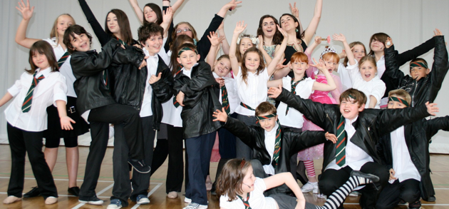

Between the 2nd and 6th of August Bradford children have the opportunity to participate in a fantastic summer school. The summer school teaches music, drama and dance.Students spend the week working towards a show which is performed on the Friday afternoon for families and friends to come and watch.
The school is run at Buttershaw Business and Enterprise College. At just £80 for the week it is great value!
Find out more at the PJC summer school website
Does anyone know if there is a Summer school in Bradford to do ICT stuff? There should be one!